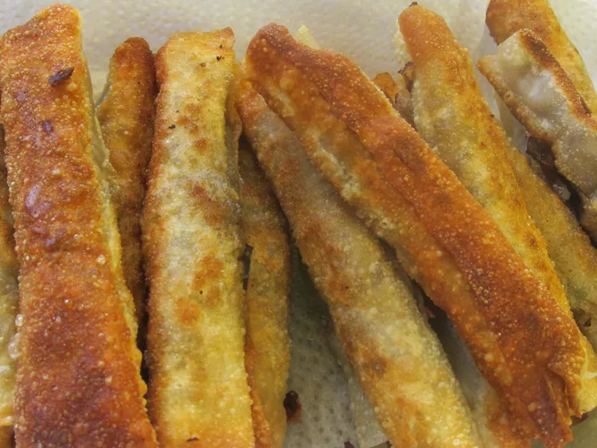

Lumpia
Home

What is Lumpia
Lumpia Shanghai is staple filipino dish that's good for any special occasion!
It's made with a mixture of pork, beef, carrots, and green beans.
Ingredients
- Ground Pork
- Ground Beef
- Ground Carrots
- Ground Green Beans
Steps
- Cook your Ground Beef and Ground Pork and drain it off all its liquids and fats
- Grind up some carrots and green beans
- Mix together well
- Spread out egg roll wrappers
- Add filling to wgg roll wrapper leaving enough space for folding
- Seal edges with light brushing of water
- After wrapping is finished fry lumpia until golden brown